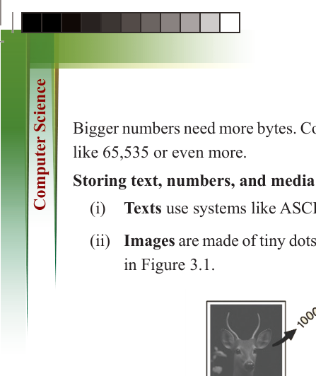
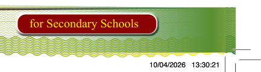
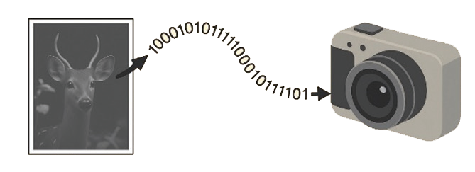

98
for Secondary Schools
Bigger numbers need more bytes. Computers can combine bytes to store large values
like 65,535 or even more.
Storing text, numbers, and media
(i)
Texts use systems like ASCII and Unicode to convert letters into binary.
(ii) Images are made of tiny dots called pixels, each stored as numbers as shown in Figure 3.1.

Figure 3.1: A digital image is stored in a binary format
(iii) Sound is saved in small pieces (samples), also stored as numbers.


How a program works

When you run a program, it consists of many small instructions that the computer

must follow. These instructions are executed by the CPU (Central Processing Unit),

which is often referred to as the ‘brain’ of the computer.”.

How the CPU follows instructions

The CPU does simple things like:

(i)


Reading from memory

(ii) Doing calculation


(iii) Moving data


(iv) Comparing numbers


By doing many small steps very fast, it can complete large tasks.

How programs are written

(i)


Computers only understand machine language, which is a long list of 0s


and 1s.

(ii) Writing in machine language is hard, so we use assembly language, which

uses easy words like:
ADD (add numbers)
MOV (move data)

ComputerScin